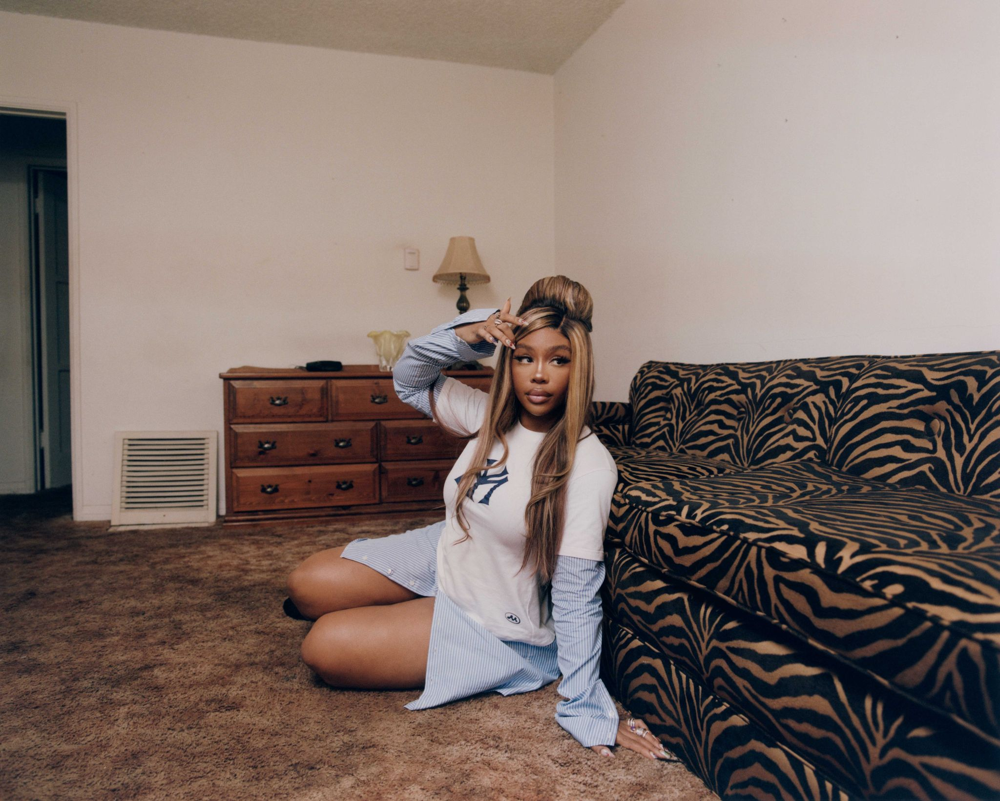
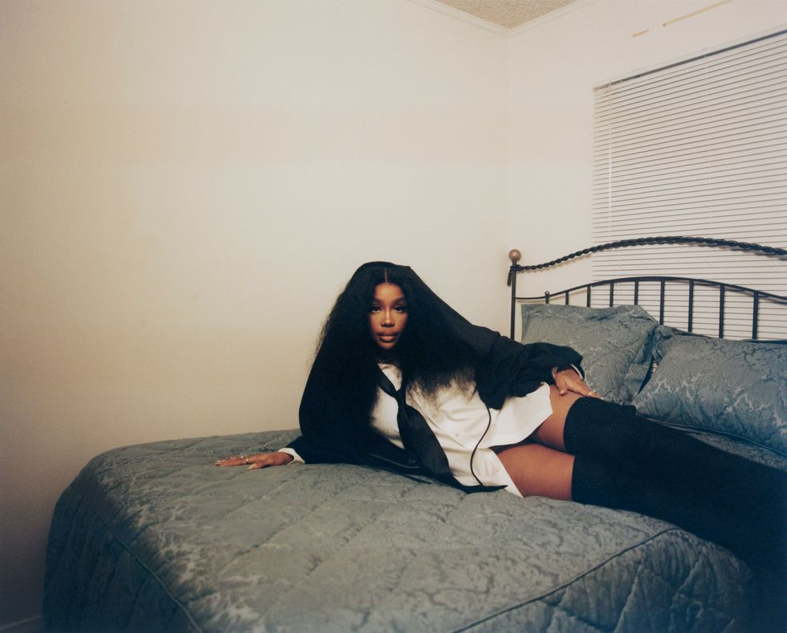
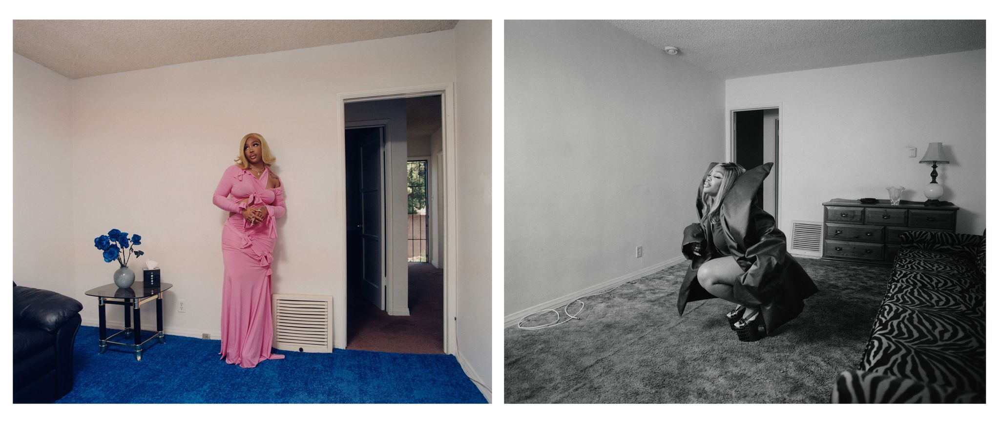
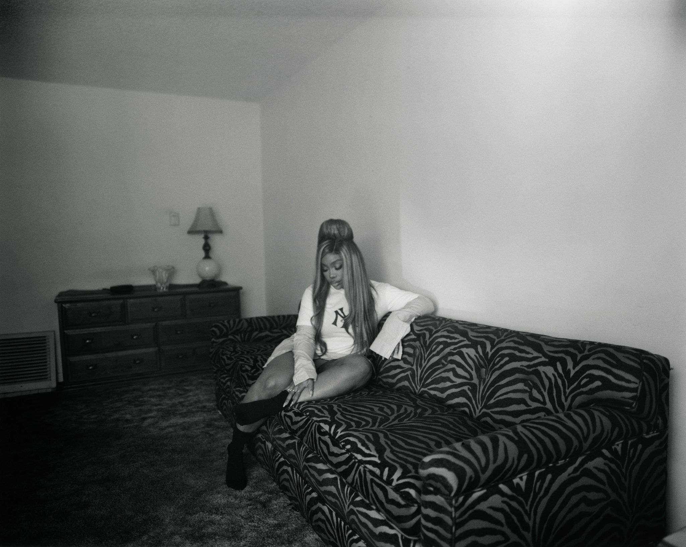

Heart on her sleeve
SZA on why she can't be anything but real
RENELL MEDRANO
Jacket, Mowalola, $1,150. Skirt, Miaou, $215. Necklace, Tiffany & Co., $3,500. Rings, Bulgari.
It was night one of two sold-out shows SZA would be performing to close out the first leg of her SOS Tour, and fans were lined up for miles in the streets surrounding Los Angeles’ Kia Forum.
Making my way into the venue that evening, I asked one of the hordes of teens standing in line what they were doing out there, since it was just past 8 P.M. and the doors had already opened. They told me they had been in line all day, some with chairs and blankets, in hopes of getting whatever cheaper tickets may be released at the box office or by resellers once the show began. I don’t know if I was more surprised that these California residents had the fortitude to withstand the rain earlier in the day, or by the fact that acquiring affordable seats online has become so hard that Gen Z is now forced to take part in the age-old Gen X ritual of camping out for concert tickets.
It was the Grammy-winner’s first arena tour run and the increase of her star power was evident everywhere. Outside the Forum, a huge digital billboard image of SZA starring in the latest Skims campaign sat high in the sky. Inside the arena, fans were screaming at Apple watch-alert decibels in anticipation of her hitting the stage. Among them were A-list celebrities like Adele, Kim Kardashian, Kylie Jenner, Justin and Hailey Bieber, Olivia Rodrigo, Pedro Pascal, and Avril Lavigne, who made the trek south to see the show. “You left the mansion to come to this, to slum it...” SZA says in disbelief while recalling the night. “Oh, Pedro Pascal, I was so excited about, because he’s on my favorite show, The Last of Us—and Narcos,” she adds.
SZA (born Solána Imani Rowe) was probably the only person in the building that night surprised that her concert had become one of the hottest tickets in town. The fanfare makes sense when you consider the massive success that her album has garnered since its release. With 23 tracks (“I will never do that again,” SZA says, laughing), an ever-wider set of genre-bending sounds, and soul-bearing lyrical content, SOS takes the baton from its (five times Grammy-nominated) predecessor, Ctrl, runs with it, then smashes the sophomore curse to bits at the finish line.
At the time of our interview, the double-platinum album had just finished a record-breaking run on the Billboard charts, spending 10 nonconsecutive weeks as the number one album in the country, making her the first solo female artist to have a streak like this since Adele’s album 25 was number one for 10 weeks back in 2015–2016. No other Black female artist has done that since the Whitney Houston–led Bodyguard soundtrack held the number one spot for 20 nonconsecutive weeks in 1992–1993.
One might think banking these sorts of rare achievements would have her celebrating. But during our time together, I realize that no one is harder on SZA than Solána. That 10-week run at number one? “I want to know what kind of criminal activity happened where I’m not at 11 or 12 weeks. Someone did criminal activity,” she half-jokes. “People are like, ‘Aren’t you happy?’ And I’m just like, ‘No, I have to put out a better body of work.’”
RENELL MEDRANO
Shirtdress, Mowalola. Rings, Bulgari.
She seems more caught up in the heaviness of the crown than its shiny jewels. There’s also a sort of mistrust of fame inside her that’s causing her to be apprehensive about putting too much security in the concept that, in all fairness, is known to be fleeting.
“It’s all really fickle....Had the first three shows of my tour gone poorly, would the rest of my dates have been sold out? Would those people be outside waiting in line by the time we got to L.A.? No. All it takes is, what, three poorly shot TikTok videos to basically decide that this tour is not worth coming to see,” she tells me matter-of-factly. “I know that people don’t love me because love is really unconditional, and I’m one scandal away from being canceled indefinitely like anyone else. I’m grateful that they like my art and that it speaks to them, and it connects and tethers all of us together in this weird way. It’s dope, but it’s also still a string that could be cut at any moment. Literally, sometimes there’s no rhyme or reason to it. Remember Susan Boyle? Like, what if I’m Susan Boyle?!”
SZA and I are seated at a table across from each other inside a suite at the Chamberlin West Hollywood hotel. It is the first Monday after the first leg of her tour wrapped, and she is already back on the grind. She has just come from a fitting with stylist Patti Wilson for the ELLE photo shoot, which is scheduled to take place the following morning, and is regretfully missing the iHeartRadio Music Awards to make time for our interview.
“I couldn’t do both that and this. I need time to prepare myself to be perceived…like I need to mentally prepare,” she explains. And she doesn’t mean this in a Diva™ way. It’s more about her internal struggle. “Some people think that, like, me having anxiety or me being shy or struggling with self-esteem is an act,” SZA says. “I’m just, dead-ass, a person. Everybody else has feelings and fears. Why wouldn’t I be scared to be famous? Would you be scared to be famous? Because I’m famous, I’m not allowed to be scared? I wasn’t born famous. I had regular quiet-ass parents from a small town like everybody else. And I guess at some point I’m supposed to acclimate to all of this?”
It was a little after 8:30 P.M. when she showed up to the suite, and I could tell by the way she took off her shoes and kicked her feet up on a chair that she was thankful for a moment to sit back and chill. She arrived eating a Shake Shack burger that she’d been trying to finish for a while. The fitting had gone longer than expected. “I hate trying on clothes,” she admits. “I don’t shop anywhere. I just wear whatever is free in my mail. I’m like, ‘Is it an extra large? Great.’” (“If I can feel like I’m under a blanket when I’m outside, that’s ideal,” she adds.)
RENELL MEDRANO
Hooded jacket, $260, shirt, tie, leg warmers, Luar.
On the rare occasion SZA feels like dressing up to go out, she focuses on accentuating her favorite accessory: “I treat my butt like a purse,” she says with a slight smile. “It’s just there to enhance whatever else. And that’s why I paid for it, because it works all by itself.” The singer hinted that she’d had a Brazilian butt lift on the intro of her SOS album. “That ass so fat, it look natural / It’s not,” the 33-year-old raps. In our conversation, she makes sure to note that the decision to have the surgery was hers alone.
“I always wanted a really fat ass with less gym time,” she says. “I didn’t succumb to industry pressure. I succumbed to my own eyes in the mirror and being like, No, I need some more ass.” I ask her about her decision to rap her way through that entire track—a first for her. She kind of shrugs before declaring, “That’s some Jersey shit. You know what I’m saying? When I feel like I have too much to say and I don’t want to say it cute.”
I do know what she means. SZA and I both grew up in New Jersey suburbs. She went to Columbia High School in Maplewood, about an hour north on the NJ Turnpike from my hometown. As a Jersey girl of the same age, I am deeply aware of our affinity for sarcasm and talking shit; it’s a love language, really. I also have an understanding of how the Garden State can fertilize a certain defensive pride. “I have a deep desire to shut everyone up,” SZA says. “And that probably comes from high school and all that type of shit. My mom always told me that I’ve always been the kind of person where people either really fuck with me or they just don’t like me at all.”
SZA’s mother, Audrey Rowe, was an executive at AT&T when she was growing up, and her father, Abdul-Alim Mubarak-Rowe, worked as a producer at CNN. She grew up in a conservative interfaith Christian-Muslim home, but was raised orthodox Muslim and even wore a hijab for a time.
An unconventional path to top dog at TDE
Unlike a lot of artists who grew up always wanting to be a singer and/or famous, SZA’s path to music wasn’t linear. After graduating high school, she enrolled at a nearby HBCU, Delaware State University, to study marine biology. She says she earned straight A’s for two semesters, then lost interest. “I’m like, ‘I told you I was smart and I proved my point. I have to leave now,’” SZA says. She stopped going to class and “completely flunked out of school and stopped working at jobs that make any sense to other people,” she explains.
In retrospect, she regrets what she put her parents through. “I really disrespected my parents for a long time....Me telling my mom I would rather go run in the streets and bartend at the strip club so I can pay for studio time [than go to school]. It’s crazy,” she says, shaking her head.
She released her first mixtape on SoundCloud in 2012, and also dabbled in the fashion world, doing a summer semester at FIT in New York City, an internship with Pharrell William and Nigo’s clothing brand Billionaire Boys Club, and later a job working for Scott Sasso’s streetwear brand 10.Deep. One day, while SZA was making a delivery to Top Dawg Entertainment, president Terrence “Punch” Henderson Jr. overheard her voice on a track that one of SZA’s friends was playing and was impressed. They kept in touch, and two years later, he signed SZA to the indie label. Today he’s her manager.
At the time SZA was signed, Kendrick Lamar was TDE’s flagship artist thanks to his 2012 mega hit album Good Kid, M.A.A.D City. SZA’s addition as the literal first lady of the male-dominated label that consisted mostly of rappers who—like Lamar, Henderson, and TDE co-founder Anthony “Top Dog” Tiffith—were from LA, felt like an odd choice. “I’ve been on a championship team and people know I’m not a bad player, but I don’t know if anybody thought I was giving, starting player or MVP,” SZA says. “I didn’t know that I was going to get my opportunity. Now that I have, I’m like, ‘Let me get my playing shoes on, and I need six Gatorades, and then we are going to get to it.’”
SZA’s scrappy nature managed to prevail over the inevitable bumps that come along with acclimating oneself to a new team. Brick by brick, hit by hit, SZA has shown and proved her way to becoming a top artist for both TDE and her parent label RCA. And with Lamar’s recent departure in 2021, there’s no question that she’s her primary label’s frontrunner.
- SOS Tour Director Ian Valentine
Getting the respect she deserves for the points she has put on the board matters more to SZA than being liked or popular. “I try not to care too much because I really had some deep disappointments when I would just be so invested. But I can’t invest because none of it is real. Even if I win a bunch of Grammys, that shit doesn’t matter. It would be so cool. But also I would not be surprised at all if I didn’t win any [more]. Because that’s just how shit goes. But that’s why the tour matters to me. ‘Cause it’s like, No, we packed out these stadiums all over the country and that was real. That’s why I can’t let up, because at the end of the day it was like, yeah, [whatever haters say] is good and well, but just make sure you add, we have sold-out dates in all arenas. Make sure you tell them that we sold out the Forum twice and we could have done it four times. Make sure you tell them that I was in the air, and that my mic was on.”
Her own worst critic
There’s no denying that SZA has put her all into this tour. That night at the Forum, she opened singing from a diving board with a moving cube-like set of digital screens imitating ocean waves, à la her SOS album cover (a re-creation of an iconic 1997 photo of Princess Diana, taken shortly before her death). Fans were then taken on a theatrical-esque journey with big budget sets, including a ship that appears almost magically on stage at one point, and gorgeous arrangements of her catalog.
“This is probably one of the most ambitious shows that we’ve ever made,” says SOS Tour director Ian Valentine (whose company Human Person has designed shows for artists like the Weeknd and Billie Eilish). “These are powerful songs that really require an amazing performance out of her musically. She’s got to do that while she’s doing choreo, navigating set changes, and the physicality of the performance space, all while looking beautiful and like she’s having a great time. She navigates all of those challenges so well that the show just feels seamless. She’s a fighter who is serious about her performance. She’s also her toughest critic.” SZA confirms as much. “I’m never happy with anything because I’m just like, ‘This was not good enough.’ I don’t know why I’m like that. I feel like some of it is probably a mental issue, some disorder that needs to be treated,” she says.
Thankfully she has family and friends who remind her who she is when things get blurry. She lists fellow musicians like Lizzo, producer Benny Blanco, and the late rapper Mac Miller as people in the industry who have created space for her. As part of her mental-health journey, she tries to only surround herself with people she can really feel free around.
“If I can’t take my wig off in this space, I don’t need to be there!” SZA says. “That’s why I hang out with Lizzo, because I can take my wig off at her house!” As she says this, she shifts the wig she has on back a few inches for emphasis, revealing her own dark hair underneath, which is slicked back into a low bun. We’ve been talking for over an hour, and I am honored to have made it to quarter-wig-removal comfort status.
RENELL MEDRANO
Left: Gown, $3,550, pantaleggings, $3,550, Balenciaga. Right: Coat, sweater, Rick Owens. Platforms, Andreas Kronthaler for Vivienne Westwood.
Ironically, it’s SZA’s raw vulnerability about her insecurities that makes her songwriting so extraordinary. In Pieces singer Chlöe tells me, “I feel like all of our intrusive thoughts that we have, she somehow figures out a way to put them in her lyrics and make everyone feel seen because she says all of the things that we are actually scared to admit to ourselves and say out loud. Because of her, of who she is, she has made me more confident in being myself, and I just really appreciate her.”
SZA has managed to free herself from the need to be seen as “good,” to make herself or her music more digestible or marketable, and that signature bravado is on full display on SOS. Whether she’s singing about wanting to choose violence over therapy (“Kill Bill”); detailing past sexcapades at the MGM hotel (“Nobody Gets Me”); or the despair you feel when you realize you’ve given the best of yourself to a loser (“Special”)—her music lives in the uncomfortable admissions that must be made before you get to the healing. “The only way that I don’t bore myself is to bare myself,” SZA explains. “It’s freeing and empowering AF.”
She compares her method to the scene in 8 Mile when Eminem’s character gets on the mic during a rap battle and reclaims his power over everything that would otherwise be used as a diss against him. For him it was, “I am white and I do live in a trailer park with my mom.” SZA says her version of that is, “I did deserve less. I have did terrible things. I do miss my ex. I do got acne, I got eczema, like whatever the fuck.”
RENELL MEDRANO
Shirtdress, Mowalola. Rings, Bulgari.
At times, it almost feels like SZA is incapable of not impulsively saying or doing whatever is on her mind, even when it would work more in her favor not to. Sometimes it’s taking to Twitter to vent about industry frustrations, and other times it’s pouring her feelings out to a packed arena in between song performances. “My ex’s father just texted me and was like, ‘My son is really hurt about what you said about him to the crowd in Portland,’” SZA says, adding that she told the crowd that her ex blocked her, but doesn’t see the problem with it since it is the truth. “You don’t get to block me on everything. Tell our mutual friends terrible things about me like I’m a monster, or whatever the case may be. And then I don’t get to speak my peace in my way. You go do your healing and I’ll do mine.”
This sort of rap-battle mentality tracks with SZA’s personality. She operates best when challenged. It’s the fuel that converts her insecurities into the necessary ego-driven energy it takes to be, as Beyoncé would say, that girl. “If it was time for me to go to war with a bitch based on my talents alone, I would come out victorious because there’s something inside of me that wants to devour someone’s soul,” she says, looking me dead in the eye for emphasis before switching back to the friendly demeanor we had for most of the interview. But at the end of the day, she knows the opponent she ultimately has to prove herself to is that voice inside her head.
“I’m just waiting until I finish proving points to myself,” she says. “‘Cause that’s what all this is about, really. I do music to prove that I have value to myself. Because what else am I going to do, in terms of how I help people? Me being whoever I’m led to be on this journey must be part of the work ‘cause it’s really hard emotionally....My prayer is to see myself the way God sees me. Like, ‘Father, help me know my value and trust that I’m valuable, and that I am who You say I am.’”